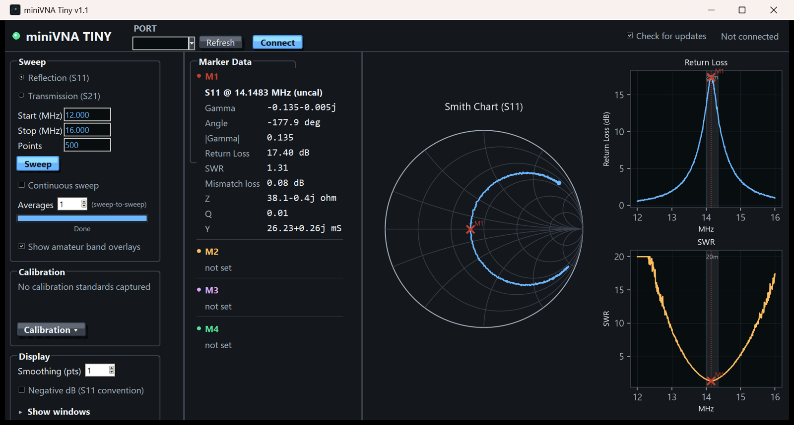

MINIVNA TINY
An independent replacement driver and control program for the mRS miniVNA Tiny.
Download for Windows Source on GitHub
Simulated data.
What it does
Sweep and calibrate
Reflection (S11) and transmission (S21) sweeps from 1 MHz to 1.5 GHz, continuous sweep, averaging and smoothing, Open/Short/Load and thru calibration.
Reflection (S11) and transmission (S21) sweeps from 1 MHz to 1.5 GHz, continuous sweep, averaging and smoothing, Open/Short/Load and thru calibration.
See it your way
Smith chart, return loss, SWR and S21 plots, band overlays, manual scales, and four markers with Z, Q, Y, mismatch loss and group delay.
Smith chart, return loss, SWR and S21 plots, band overlays, manual scales, and four markers with Z, Q, Y, mismatch loss and group delay.
TDR
Distance-to-fault from a reflection sweep, with velocity factor and a one-click wide-band sweep for short cables.
Distance-to-fault from a reflection sweep, with velocity factor and a one-click wide-band sweep for short cables.
Portable
One exe, no installer. Settings, calibration and window position live in a file beside it, so it runs from a USB stick. Export Touchstone and CSV.
One exe, no installer. Settings, calibration and window position live in a file beside it, so it runs from a USB stick. Export Touchstone and CSV.
Download and use
Download the zip from Releases, unzip it anywhere and run miniVNA Tiny.exe. Nothing is installed and the program only looks on GitHub for a newer release (one small request, switch off with the tick box in the top bar). The User Guide PDF is in the zip. The exe is unsigned, so Windows SmartScreen may ask you to confirm.
Please note
Independent and unofficial; no affiliation with the device's maker. Measurements are only as good as your calibration. No warranty, not for safety-critical use. See the full disclaimer. MIT licence. 73 de VK3EI.